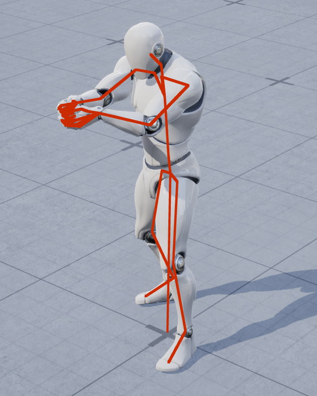

Debugging your AnimNodes
When you are programming your own AnimNodes, there’s a high chance that you’ll need to debug them at some point as well. And once you have confirmed that the issue is actually in your AnimNode and not some other part of the graph, you have a couple of options available.
To find out whether your AnimNode is actually causing the issue you want to debug is a different topic though and we won’t get into that today. Unreal offers tools like Pose Watches AnimBP live compilation and the Rewind Debugger that can all help you single down specific nodes, but in this post I assume all of that has already been done.
Also, this is not meant as an exhaustive list, but rather what I tend to do when faced with issues in an AnimNode of mine.
Option 1: Breakpoints
This is the obvious option and I am mostly listing it here for completeness.
And if you are reading this post, I assume you know about breakpoints in C++ and how to use them. Blueprint Breakpoints sadly aren’t a thing that Unreal Engine offers for the AnimGraph portion of your Animation Blueprints, so we have to go deeper for AnimNodes.
There is one point of caution however that I want to mention: Most function on AnimNodes are executed on worker threads. And if you have a bunch of characters running AnimBPs with your AnimNode in the current level, it can quickly become overwhelming which characters exhibit the issue you are trying to debug.
So try and isolate the issue to a specific circumstance with as few involved actors as possible before trying to dive into breakpoints to debug AnimNodes.
Option 2: Implement GatherDebugData
We have briefly touched on this method during your first AnimNode, but let’s take a look at it again.
FAnimNode_Base has a method virtual void GatherDebugData(FNodeDebugData& DebugData) that can (and should!) be overriden in descending AnimNodes.
A fairly straight forward override might look something like this:
// MyAnimNode.h
virtual void GatherDebugData(FNodeDebugData& DebugData) override
{
DebugData.AddDebugItem(FString::Printf(TEXT("(%s) Debug Data here"), *DebugData.GetNodeName(this)));
// Call GatherDebugData for any pose inputs this node might have
}
and if you execute the ShowDebug Animation command, it will display whatever string you add to the DebugData.
Now, this is a function of FAnimNode_Base, so it doesn’t come with a done of comfort features, like automatically calling it for inputs.
So if your AnimNode has pose inputs, make sure to call GatherDebugData on them as well if they are being evaluated to make sure the entire active graph is properly displayed.
You might also notice that this method does not have the characteristic _AnyThread suffix some of the other methods of FAnimNode_Base have.
This is because it is not part of the regular update cycle of an AnimNode.
The troubling thing here is though: This GatherDebugData is not const, so technically, you are free to modify data as you wish in here.
It is also not guarded by any preprocessor statements to be only included in builds that allow the ShowDebug commands.
Both would be measures I’d expect the engine to take.
So eventhough this is not part of the guaranteed update cycle of AnimNodes, you should never modify any data in here and treat this method as if it were marked const.
But okay, let’s go deeper than that: What is this FNodeDebugData about we get passed into the function?
Well, it basically is a tree-like representation of the debug data that gets accumulated as the graph is traversed by the recursive function calls to GatherDebugData.
That sounds all fancy, but if your Animgraph does not contain any branching logic, this essentially boils down to just an array of debug items. That’s it.
And if your graph does actually branch at some point, we get to the “tree-like” part, where we can split up the debug data using the BranchFlow method to represent different paths along the graph.
Taking a look at this struct, we can see that FNodeDebugData has a few methods that can be called:
AddDebugItem(), which we already used aboveBranchFlow()GetCachePoseDebugData()GetNodeName()
Of course, none of them are documented, so let’s go over them in brief:
AddDebugItem will append a new FNodeDebugData::DebugItem to the end of the array of debug items that nodes higher up in the graph have already added to.
BranchFlow will create and return a new FNodeDebugData that you can pass into the GatherDebugInfo call of any input-poses your node has.
This will always branch out from the last debug item that was added, so you cannot go back up the hierarchy and start branching from anywhere.
Once you have called BranchFlow on FNodeDebugData, you will not be able to call AddDebugItem() on it anymore.
Instead, you will only be able to add debug items to the new FNodeDebugData instance returned by BranchFlow.
This is asserted in the engine and will crash your game if violated.
GetCachePoseDebugData is a specialized function for use in FAnimNode_SaveCachedPose. I don’t think there is a practical use outside of that.
GetNodeName should probably always be the first thing when you want to add a new debug item.
It will return an FString that alreaday contains your nodes name and weight, as well as a potential node description.
Start off with this and add your node-specific debug info to the string before pushing it to AddDebugItem to be displayed.
Option 3: Debug Drawing
This is my favourite option, if applicable.
The context struct you get as an input in your _AnyThread methods contains a pointer to the AnimInstanceProxy that does the evaluation.
And FAnimInstanceProxy has a nice little collection of methods you can use for debug drawing.
Here’s a list of what is currently available:
AnimDrawDebugOnScreenMessageAnimDrawDebugInWorldMessageAnimDrawDebugLineAnimDrawDebugDirectionalArrowAnimDrawDebugSphereAnimDrawDebugCoordinateSystemAnimDrawDebugPlaneAnimDrawDebugPointAnimDrawDebugCircleAnimDrawDebugConeAnimDrawDebugCapsule
as you can see, they are pretty exhaustive. But that also means you can do pretty much any debug drawing you would like right from your AnimNode. And it works both in the editor as well as in-game!
All of them are guarded via preprocessor #if ENABLE_ANIM_DRAW_DEBUG, so if you want to use them, you should do the same whenever you call these methods.
The only disadvantage is that this macro will compile the debug drawing out of test- and shipping-builds.
But still, it will work in the editor, as well as development builds, which is usually good enough.
And technically, you can use them like that however you want.
My workflow
The approach I typically take has two goals I want to achieve when utilizing thise AnimDrawWhatever methods.
So let me share these as well and how I go about them:
- When selected in the AnimGraph, I want that node to draw its debug info
- When in-game I want to be able to display the debug info as well
Both points are relatively straight forward, if you know what to look out for.
The first thing to do is to add a new boolean to your FAnimNode_Base derived struct.
// MyAnimNode.h
#if ENABLE_ANIM_DRAW_DEBUG
bool bRequestDebugDraw = false;
#endif
and in your evaluate function, where I typically add my debug drawing code
// MyAnimNode.cpp
// FMyAnimNode::Evaluate_AnyThread
#if ENABLE_ANIM_DRAW_DEBUG
if(bRequestDebugDraw)
{
/** Do your debug drawing */
bRequestDebugDraw = false
}
#endif
This enables us to request a debug draw for exactly one evaluation cycle.
But from where do we request it? From the AnimGraphNode!
UAnimGraphNode_Base as a method called Draw. And you can do your debug drawin here if you want to.
The issue with that is that all the drawing you do here is based on the final result of the AnimGraph, as you only get access to the preview skeletal mesh component that has the animation already fully evaluated. So any pose overlays, additives, or SkeletalControl modifications that happen ontop of your AnimNode are already folded into the final pose here, with no practical way of getting it back.
What I do instead is to get the active preview node using GetActiveInstanceNode() and simply set the request flag on it:
// MyAnimGraphNode.cpp
// UMyAnimGraphNode::Draw
FMyAnimNode* PreviewNode = GetActiveInstanceNode<FMyAnimNode>(PreviewSkelMeshComp->GetAnimInstance());
if(PreviewNode)
{
PreviewNode->bRequestDebugDraw = true;
}
That way, the next time the node gets evaluated, it will process the request and set the flag to false. But as long as we select this node, we will request more debug drawing each frame.
So that is goal 1 achieved. Onto the second one.
To have the debug drawing work in-game, I tend to use a console variable and check if either the console variable is set to 1, or use the debug request. It’s not really more than that.
// MyAnimNode.cpp
#if ENABLE_ANIM_DRAW_DEBUG
static TAutoConsoleVariable<bool> CVarDrawMyAnimNode(
TEXT("a.AnimNode.DrawMyAnimNode"),
false /** default value */,
TEXT("Enables debug drawing for MyAnimNode."));
#endif
// FMyAnimNode::Evaluate_AnyThread
#if ENABLE_ANIM_DRAW_DEBUG
if(bRequestDebugDraw || CVarDrawMyAnimNode.GetValueOnAnyThread())
{
/** Do your debug drawing */
bRequestDebugDraw = false
}
#endif
And that way, once you enable the console variable, you will get your debug drawing both in-game and in the editor, even if the node is not selected in the editor.
The only caveat I want to mention is that most of your transforms in an AnimNode will be handled in component-space or even local space, but the debug drawing parameters are always in world-space.
So to have debug drawin in-game work properly on the character and not be centered around the world origin, you’ll want to take into account the components world transform.
You can do that using FAnimInstanceProxy::GetComponentTransform() and simply transform anything you have from component space to world space.
And that’s it! Once you’ve got that you may end up with something like this:

(This example is the DrawHierarchy AnimNode fom my tool-collection plugin)And now you know how I like to go about debugging my AnimNodes!
As always I hope this is useful to you, and maybe you even learned something new.
Cheers!